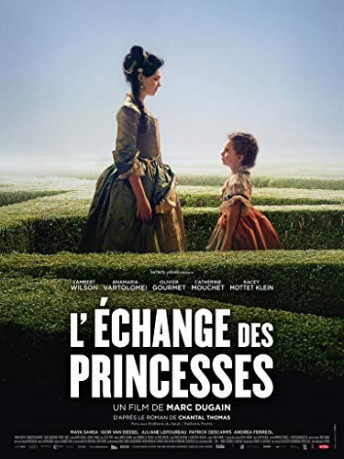
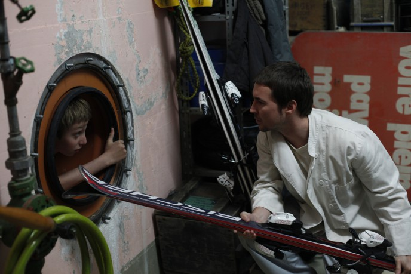
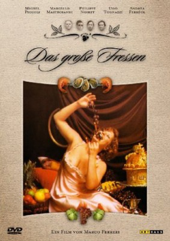

#11408 Ein Königlicher Tausch
 
 IMDB-Wertung: 7.0 / 10
IMDB-Wertung: 7.0 / 10  Metascore: 0
Metascore: 0 
In 1721, the Regent of France, wanting to seal the peace with Spain, offers to the Spanish King, a marriage between their respective heirs: Louis XV, age 11, and Maria Anna Victoria, the 4-year-old Spanish Infanta (princess). The Regent of France also offers to marry his daughter, Mademoiselle deè Montpensier, 12, to the Prince of Asturias, the 14-year-old heir apparent to the Spanish throne. Madrid responds enthusiastically to both proposals, and the ceremonies are promptly organized. The exchange of the princesses is to take place with great pomp on a small island, in the river bordering the two countries. Everything has been done to expect the best of the children, but nothing will proceed as planned.
Jahr: 2017
Dauer: 100 Minuten
FSK:
Land: Frankreich Studio: Alamode FilmTonspuren: DTS - ,
Untertitel: Deutsch,
Auflösung: 1080p (1920x800) Größe: 7106 MB
Genre: Drama, Geschichte
Regisseur: Marc Dugain
Drehbuch: Chantal Thomas, Chantal Thomas, Marc Dugain
Soundtrack: Marc Tomasi
Darsteller:
 Lambert Wilson als Philippe V
Lambert Wilson als Philippe V- Olivier Gourmet als Philippe d'Orléans, le régent
- Catherine Mouchet als Mme de Ventadour
-  Kacey Mottet Klein als Don Luis
-  Andréa Ferréol als Princesse Palatine
- Gwendolyn Gourvenec als
- Vincent Londez als
- Maya Sansa als
- Jean-Claude Soetens als
- Anamaria Vartolomei als Louise Elisabeth
- Igor van Dessel als Louis XV
- Juliane Lepoureau als Marie Victoire
 Patrick Descamps als
Patrick Descamps als - Thomas Mustin als
- Didier Sauvegrain als
- Jonas Wertz als
- Ana Rodriguez als
- Pedro Cabanas als
- Maxence Dugain als
- Alice D'Hauwe als
- Thibaut Neve als
- Cédric Cerbara als
- Camille Pistone als
- Yann Leriche als
- Carlo Ferrante als
- Christophe Lambert als
- François Sikivie als
- Julien Jakout als
- Philippe Legros als
- André Pasquasy als
- Arnaud Peiffer als
Datei: X:\2017(G-M)\Königlicher Tausch, Ein (2017, FSK, 1920x800).mkv seit 29.06.2019
Festplatte: HD 2017(A-Z)-2018(A-F)
 Es gibt insgesamt 148 Filme in der Gruppe '2017(G-M)'
Es gibt insgesamt 148 Filme in der Gruppe '2017(G-M)'